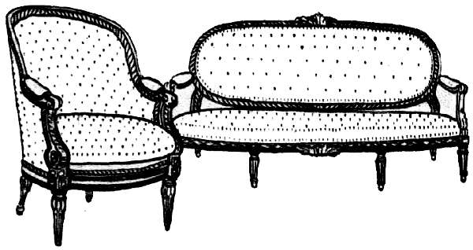

Украшение предметов мебели.

В работе над столярно-мебельными изделиями, наряду с использованием общих приемов и средств композиции, следует учитывать и специфические особенности данной отрасли. Главная особенность заключается в том, что при любой степени декоративности, богатстве и ценности материала предмет мебели имеет прямое функциональное назначение. Кроме того, в его облике должна быть отражена еще и специфика помещения, в котором этот предмет или группа предметов находятся. Конкретно это означает, что кресло для кабинета должно отличаться от кресла для столовой, и при этом оба предмета должны быть удобными в обращении, прочными и долговечными. Последнее качество обязательно для предметов ценной мебели, так как бессмысленной будет затрата больших усилий, дорогих материалов и сложной высококачественной работы на недолговечную вещь.
При создании комплекта мебели определенного назначения (обеденный стол со стульями; стол, диван и кресла; письменный стол с креслом и т. п.) композиционные достоинства центрального предмета комплекта должны быть более высокими, чем дополняющих предметов. В рядовой («магазинной») мебели проработка деталей и общей формы обычно сделаны на одинаковом уровне.
Композиция предметов мебели строится на использовании такого средства, как единство, обусловленного однородностью текстуры применяемой древесины. Хотя в мебели дерево и не всегда доминирует по объему (например, при наличии обивки), являясь основой структуры предмета, оно всегда занимает главное композиционное положение, поэтому для выделения основных композиционных узлов выбирают дерево с наиболее интересной текстурой.

Рис. 20. Единство приемов композиции в разных предметах мебели
Понимание декоративных возможностей древесины связано со способностью видеть общую красоту изделия в куске материала. При развитии такого представления даже дефект материала может послужить основой для выразительности общего вида предмета. Так, плоскость, склеенная из особо сучковатых делянок, специально подобранных, выглядит интересно и живописно. А сердцевинная синева хвойных пород – брак материала? Мебель, склеенная из торцов засиненной древесины оказалась столь декоративной, что неоднократно экспонировались на международных выставках.
При необходимости использовать другие свойства древесины (пригодность к тонкой резьбе, профилировке) следует выбирать мелкотекстурный материал.
Одним из наиболее распространенных средств повышения выразительности мебельных изделий являются украшения. Их применяют в тех случаях, когда структурная основа предмета и характер материала не дают возможности полноценно выразить замысел автора.
Украшением в предмете мебели или его детали является не только дополнительный, извне, волею мастера привнесенный элемент, но и всякое изменение формы структурной или конструктивной детали с целью придания ей дополнительных эстетических качеств. Так, изогнутая форма ножки или проножек применяется исключительно для красоты, и с этой же целью совершенно правомерно появляются на этих деталях резьба и накладное украшение. С функциональной и технологической точки зрения никакой необходимости в столь сложных формах нет. История мебельных форм показывает, что без специальных затрат труда на украшение предмета или его детали нет возможности определить этот мебельный предмет как ценный в художественном отношении.
Украшения выполняют из дерева, других материалов, имеющих декоративную поверхность. Деревянные украшения бывают в виде рельефа (порезок, профилей, точеных деталей) и плоскостных композиций, разработанных на основе техники маркетри.
Не деревянные украшения, рельефные или плоскостные, применяют либо в качестве составной части фурнитуры, либо как декорацию структурных частей предмета.
Место и характер украшения выбирают с учетом материально-технических возможностей, исходя из действительной необходимости в нем.
Условно украшения можно разделить на две группы: размещаемые в композиционном центре и рассчитанные на весь предмет целиком, и размещаемые на деталях меньшей выразительности.
Как правило, для украшения применяют более ценные материал, чем материал основного предмета, а при изготовлении из одинакового материала украшение требует более сложной обработки. Так, в ореховой дверке неуместно делать вставку из древесины сосны или липы, а украшение, сделанное из древесины ореха, должно получить интересную обработку формы, текстуры, оригинальную отделку и пр. Поэтому в предметах, основа которых выполнена из дерева дорогих, редких пород, украшения делают из металла (бронзы).
Подобное украшение повышает выразительность вещи, если оно подчеркивает структурно-конструктивные элементы предмета, привлекает к ним внимание (царги, ножки). При этом врезные украшения более подчеркивают работоспособность элемента, чем накладные, которые в этом случае целесообразнее делать из недеревянных материалов.